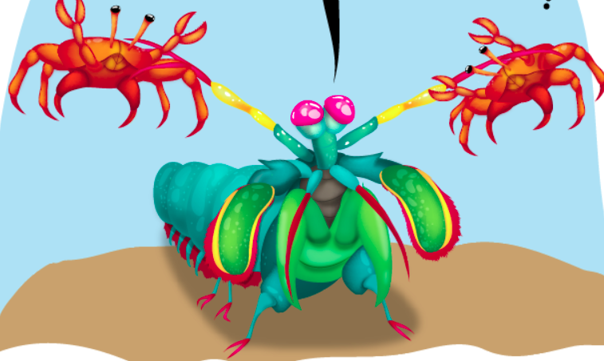

Informações Gerais
O animal Stomatopoda "Odontodactylus scyllarus" possui algumas caractéristicas. Reino: Animalia, Filo: Arthropoda, Subfilo: Crustacea, Classe: Malacostraca, Subclasse: Hoplocarida, Ordem: Stomatopoda.
O animal Stomatopoda "Odontodactylus scyllarus" possui algumas caractéristicas. Reino: Animalia, Filo: Arthropoda, Subfilo: Crustacea, Classe: Malacostraca, Subclasse: Hoplocarida, Ordem: Stomatopoda.
A Stomatopoda tem milhares de células sensitivas a luz, chamada de cones e varas. Os cones usados para enxergar as cores e as varas para a luz e a movimentação.

Essa arma que a Stomatopoda possui, é tão forte que se comparadao a um humano utilizando um taco de baseball com 1/10 da força, seria capaz de colocar o taco em orbita.
